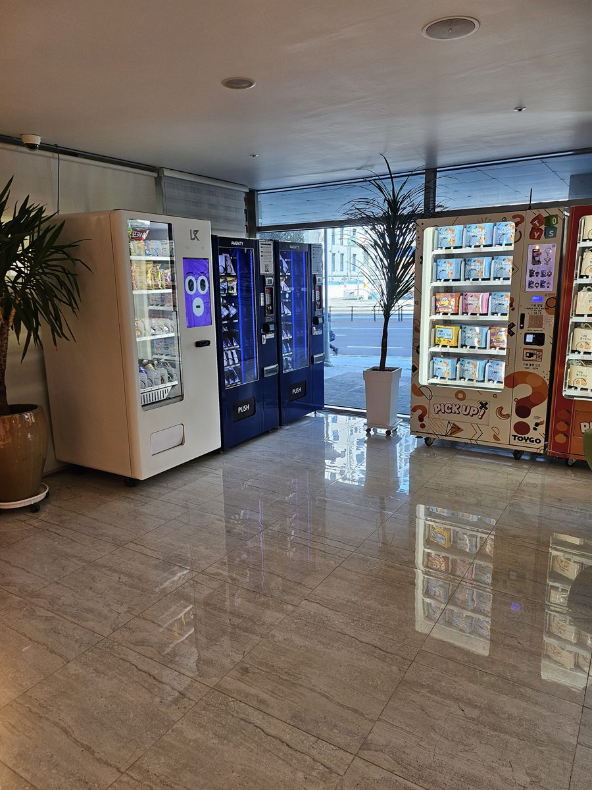

숙박업소에서 자판기 문의가 들어오는 이유는 거의 하나로 모입니다. 밤에 프런트로 걸려 오는 전화 때문입니다. 물 없느냐, 칫솔 하나만 달라, 애가 심심해하는데 뭐 없느냐. 낮에는 직원이 있으니 문제가 아닌데, 야간에 한두 명이 지키는 시간대에는 그 요청 하나하나가 자리를 비우게 만듭니다. 로비 한쪽을 손님이 알아서 사 가는 코너로 만들어 두면 이 전화가 눈에 띄게 줄고, 대신 매출 항목이 하나 생깁니다.
이번 현장은 로비 출입문 옆 벽면이 길게 비어 있던 자리였습니다. 먼저 본 것은 체크인 동선입니다. 프런트 정면은 캐리어를 끌고 들어온 손님이 줄을 서는 구간이라 기계를 그쪽에 세우면 서로 막힙니다. 그래서 출입문과 프런트를 잇는 동선을 비워 두고, 그와 나란한 벽면을 따라 기계를 한 줄로 붙였습니다. 다음은 바닥과 전원입니다. 로비 대리석 바닥은 평평해 보여도 배수를 위해 미세하게 기울어진 구간이 있어, 기계마다 수평을 다시 잡고 바퀴를 잠갔습니다. 냉장 기계는 상시 전원을 쓰므로 로비 조명 회로에 겹쳐 물리지 않도록 전원을 따로 잡고, 선은 벽을 타게 정리해 캐리어 바퀴에 걸리지 않게 했습니다. 자동문이 여닫힐 때 바깥 공기가 바로 닿는 자리는 냉장 효율이 떨어져 한 칸 안쪽으로 물렸습니다.
이천 호텔 로비에 맞는 구성
품목은 밤에 프런트로 물어보던 것을 그대로 옮기는 데서 시작합니다. 생수와 탄산, 이온음료, 숙취 해소 음료를 넓게 잡고, 컵라면·과자·견과처럼 방에서 바로 뜯는 간식을 채웠습니다. 옆 칸은 어메니티—칫솔·면도기·수건·충전 케이블 같은 것—로 갈랐습니다. 음료와 생활용품은 사는 이유가 다르니 한 기계에 섞지 않고 나누는 쪽이 손님도 찾기 쉽습니다. 가족 단위 투숙이 많은 곳이라면 완구·뽑기 기계 한 대가 의외로 잘 나갑니다. 아이가 로비에서 붙잡는 자리라 부모가 지갑을 여는 비율이 높습니다.
결제는 신용·체크카드와 삼성페이·카카오페이·네이버페이를 받습니다. 숙박업소는 현금함을 두지 않는 편이 훨씬 낫습니다. 불특정 다수가 드나드는 공간이라 현금이 들어 있는 기계는 그 자체로 관리거리가 되고, 야간에 수금하러 나갈 일도 만들지 않는 쪽이 좋습니다. 칸별 재고와 시간대별 판매는 휴대폰 앱에서 봅니다. 프런트 직원이 교대하면서 앱만 한 번 확인하면 어느 칸이 비었는지 알 수 있어, 채우는 일을 따로 사람 쓰지 않고 기존 근무 안에서 처리할 수 있습니다.
호텔 로비, 좋은 점과 어려운 점
좋은 점은 이미 사람이 지나는 자리라 따로 손님을 끌 필요가 없다는 것입니다. 투숙객은 하루에 최소 두 번 로비를 지나고, 그때마다 기계 앞을 스칩니다. 실내라 비바람과 직사광선을 타지 않아 기계 수명과 냉장 효율에도 유리합니다. 무엇보다 영업시간이 24시간입니다. 상가 자판기는 가게 문을 닫으면 같이 멈추지만 호텔 로비는 새벽 3시에도 팔립니다. 매출이 몰리는 시간대가 오히려 심야인 경우가 많습니다.
어려운 점도 솔직히 말씀드립니다. 로비 분위기와 맞춰야 합니다. 호텔은 첫인상이 곧 평가로 이어지는 업종이라, 기계가 튀면 손님이 먼저 알아봅니다. 색이 과한 래핑은 피하고 벽면과 결이 맞는 마감을 고르는 편이 낫습니다. 소음도 봅니다. 냉장 압축기가 도는 소리가 조용한 새벽 로비에서는 생각보다 크게 들려, 프런트 데스크나 소파 라운지와는 한 칸 떨어뜨리는 쪽이 좋습니다. 성수기 편차도 있습니다. 주말과 휴가철에는 하루 만에 칸이 비고 평일에는 며칠씩 그대로인 곳이 많아, 처음 한 달은 판매 기록을 보고 채우는 주기를 잡아야 재고가 남지 않습니다.
이천 무인매장, 이런 자리가 잘 됩니다
이천은 머물러 가는 손님이 꾸준히 있는 도시입니다. 온천과 도자기로 이름이 알려져 주말 방문객이 이어지고, 설봉공원과 도예촌 일대는 행사철에 유동이 크게 늘어납니다. 이런 성격 덕분에 호텔·모텔·펜션 같은 숙박 상권이 시내와 외곽에 함께 형성되어 있어, 이번 같은 로비 설치 문의가 꾸준히 들어옵니다. 시내 쪽은 증포동과 중리동에 아파트와 상가가 몰려 있고 창전동 일대가 전통적인 중심 상권이라, 학원·스터디카페·PC방 자리가 자주 나옵니다.
외곽은 결이 다릅니다. 부발읍은 대규모 사업장과 배후 주거가 함께 있어 사무실 휴게실·기숙사·공장 휴게 공간 성격의 설치가 많습니다. 교대 근무가 도는 곳은 매점이 닫힌 시간대에 자판기만 남으므로 회전이 특히 빠릅니다. 마장면과 호법면은 고속도로 나들목이 가까워 물류센터와 창고가 이어지고, 기사님들이 짧게 머무는 자리라 냉장 음료와 간편식 수요가 큽니다. 장호원읍과 대월면·모가면 쪽은 생활권이 넓게 퍼져 있어 읍면 소재지 상가와 관공서 대기 공간 문의가 나옵니다. 경강선 이천역과 부발역 주변, 이천종합터미널 일대는 기다리는 시간이 생기는 자리라 자판기 성격에 잘 맞습니다.
이천 서비스 지역
창전동 · 증포동 · 중리동 · 관고동 · 부발읍 · 장호원읍 · 신둔면 · 백사면 · 호법면 · 마장면 · 대월면 · 모가면 · 설성면 · 율면
역·터미널 — 이천역 · 부발역 · 신둔도예촌역 · 이천종합터미널
인접한 여주 · 광주 · 용인 · 안성 · 충북 음성까지 같은 조건으로 나갑니다.
이천 무인창업, 이렇게 시작하시면 됩니다
설치비는 받지 않습니다. 자리 확인부터 품목 구성, 기계 반입, 카드 결제 연동, 재고 채우는 방법까지 한 번에 안내해 드립니다. 호텔처럼 손님이 계속 드나드는 곳은 체크아웃이 끝나고 체크인이 시작되기 전, 로비가 가장 비는 낮 시간대로 반입을 잡습니다. 로비가 1층이 아니거나 계단을 거쳐야 한다면 출입문 폭과 엘리베이터 크기, 콘센트 위치 세 가지를 먼저 확인하고 견적을 냅니다. 기계 대수는 남는 벽 길이에 맞춰 정하면 되고, 한 대로 시작해 반응을 보고 옆 칸을 늘리는 방식도 많이 하십니다.
비용은 구입이 렌탈보다 유리한 편입니다. 렌탈료를 몇 년 내는 것보다 처음에 사 두는 쪽이 총액이 낮게 나오는 경우가 많고, 호텔처럼 오래 두고 쓰는 자리일수록 차이가 벌어집니다. 구성별 36개월 총비용은 구입 vs 렌탈 비교 가이드에 정리해 두었습니다.
이천 무인자판기 설치 상담
세워 둘 자리 사진 한 장만 보내 주셔도 됩니다. 남는 벽 길이와 콘센트, 반입 경로를 보고 어떤 크기가 맞을지 먼저 봐 드린 뒤 견적을 보내 드립니다.
※ 사진은 픽포스가 시공한 설치 사례이며, 글에 적힌 지역의 현장 사진은 아닙니다. 자판기 구성과 품목은 자리와 업종에 따라 달라지며, 호텔·숙박업소 로비 설치는 남는 벽 길이와 반입 경로, 전원 위치를 현장에서 먼저 확인합니다. 정확한 금액은 견적서로 안내드립니다.